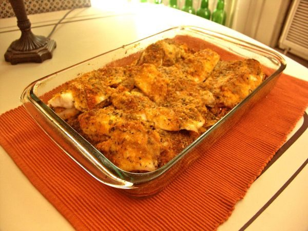

Tilapia Fillets in Lemon Sauce

Photo: Scott Teresi (CC BY-SA 2.0)
Broiled tilapia fillets topped with a seasoned bread-crumb mixture bound with a lemon-butter sauce.
Directions
- Combine margarine or butte and lemon juice. Mix together in a medium bowl with the bead crumbs, parsley and 1/4 cup of the lemon mixture. Place on ovenproof dish and broil until the tilapia flakes easily with a fork. Top with bread mixture and broil again until heated through. Cooking times varies depending on size of fillets. 7 to 9 minutes.
- Combine margarine or butte and lemon juice. Mix together in a medium bowl with the bead crumbs, parsley and 1/4 cup of the lemon mixture. Place on ovenproof dish and broil until the tilapia flakes easily with a fork. Top with bread mixture and broil again until heated through. Cooking times varies depending on size of fillets. 7 to 9 minutes.
Goes well with
https://lizotte.cool/recipe/tilapia-fillets-in-lemon-sauce.html